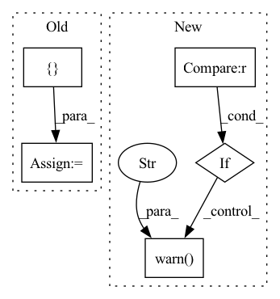

Pattern ID :14414
Before Change
"normalize_images": normalize_images,
}
self.actor_kwargs = self.net_args.copy()
sde_kwargs = {
"use_sde": use_sde,
"log_std_init": log_std_init,
"sde_net_arch": sde_net_arch,
"use_expln": use_expln,
"clip_mean": clip_mean,
}
self.actor_kwargs.update(sde_kwargs)
self.critic_kwargs = self.net_args.copy()
tqc_kwargs = {
"n_quantiles": n_quantiles,After Change
}
self.actor_kwargs = self.net_args.copy()
if sde_net_arch is not None :
warnings.warn("sde_net_arch is deprecated and will be removed in SB3 v2.4.0." , DeprecationWarning)
sde_kwargs = {
"use_sde": use_sde,
"log_std_init": log_std_init,In pattern: SUPERPATTERN
Frequency: 5
Non-data size: 5
Instances Fragment ID: 47455110
Project Name: stable-baselines-team/stable-baselines3-contrib
Commit Name: 91f9b1ed34fbaa9243a044ea67aa4c677663bfc2
Time: 2021-09-28
Author: antonin.raffin@ensta.org
File Name: sb3_contrib/tqc/policies.py
M Class Name: TQCPolicy
N Class Name: TQCPolicy
M Method Name: __init__(19)
N Method Name: __init__(19)
M Parent Class: BasePolicy
N Parent Class: BasePolicy
M File Name: sb3_contrib/tqc/policies.py
N File Name: sb3_contrib/tqc/policies.py
M Start Line: 338
M End Line: 344
N Start Line: 331
N End Line: 339
Before Change
// Trainer
// we need to instantiate the trainer each time we want to use it
self.trainer_kwargs = {**trainer_kwargs}
if self.trainer_kwargs.get("callbacks", None) is None:
self.trainer_kwargs = {
**{"callbacks": [TQDMProgressBar()], **trainer_kwargs}
}After Change
else:
trainer_kwargs = {**trainer_kwargs, **{"max_steps": max_steps}}
if "max_epochs" in trainer_kwargs.keys() :
warnings.warn("max_epochs will be deprecated, use max_steps instead." )
// Callbacks
if trainer_kwargs.get("callbacks", None) is None:
callbacks = [TQDMProgressBar()] Fragment ID: 47455111
Project Name: nixtla/neuralforecast
Commit Name: e3dd1690cb7e6fc84a4cf89bacc0762f209d1b0f
Time: 2022-12-28
Author: cristiani.challu@gmail.com
File Name: neuralforecast/common/_base_windows.py
M Class Name: BaseWindows
N Class Name: BaseWindows
M Method Name: __init__(19)
N Method Name: __init__(15)
M Parent Class: pl.LightningModule
N Parent Class: pl.LightningModule
M File Name: neuralforecast/common/_base_windows.py
N File Name: neuralforecast/common/_base_windows.py
M Start Line: 76
M End Line: 94
N Start Line: 28
N End Line: 122
Before Change
def get_gt_seg_maps(self, efficient_test=False):
Get ground truth segmentation maps for evaluation.
gt_seg_maps = []
for img_info in self.img_infos:
seg_map = osp.join(self.ann_dir, img_info["ann"]["seg_map"])
if efficient_test:
gt_seg_map = seg_mapAfter Change
def get_gt_seg_maps(self, efficient_test=None):
Get ground truth segmentation maps for evaluation.
if efficient_test is not None :
warnings.warn(
"DeprecationWarning: ``efficient_test`` has been deprecated "
"since MMSeg v0.16, the ``get_gt_seg_maps()`` is CPU memory "
"friendly by default. " )
for idx in range(len(self)):
ann_info = self.get_ann_info(idx)
results = dict(ann_info=ann_info) Fragment ID: 47455106
Project Name: rayguan97/ganav-offroad
Commit Name: 35e8f538bedb93a3c3437fbea76ffff4fd9e7c96
Time: 2022-07-26
Author: rayguan@terpmail.umd.edu
File Name: mmseg/datasets/custom.py
M Class Name: CustomDataset
N Class Name: CustomDataset
M Method Name: get_gt_seg_maps(2)
N Method Name: get_gt_seg_maps(2)
M Parent Class: Dataset
N Parent Class: Dataset
M File Name: mmseg/datasets/custom.py
N File Name: mmseg/datasets/custom.py
M Start Line: 235
M End Line: 244
N Start Line: 255
N End Line: 266
Before Change
// Trainer
// we need to instantiate the trainer each time we want to use it
self.trainer_kwargs = {**trainer_kwargs}
if self.trainer_kwargs.get("callbacks", None) is None:
self.trainer_kwargs = {
**{"callbacks": [TQDMProgressBar()], **trainer_kwargs}
}After Change
//// Trainer arguments ////
// Max steps, validation steps and check_val_every_n_epoch
if "max_epochs" in trainer_kwargs.keys() :
warnings.warn("max_epochs will be deprecated, use max_steps instead." )
else:
trainer_kwargs = {**trainer_kwargs, **{"max_steps": max_steps}}
// Callbacks Fragment ID: 47455112
Project Name: nixtla/neuralforecast
Commit Name: e3dd1690cb7e6fc84a4cf89bacc0762f209d1b0f
Time: 2022-12-28
Author: cristiani.challu@gmail.com
File Name: neuralforecast/common/_base_recurrent.py
M Class Name: BaseRecurrent
N Class Name: BaseRecurrent
M Method Name: __init__(17)
N Method Name: __init__(13)
M Parent Class: pl.LightningModule
N Parent Class: pl.LightningModule
M File Name: neuralforecast/common/_base_recurrent.py
N File Name: neuralforecast/common/_base_recurrent.py
M Start Line: 68
M End Line: 89
N Start Line: 28
N End Line: 112
Before Change
"normalize_images": normalize_images,
}
self.actor_kwargs = self.net_args.copy()
sde_kwargs = {
"use_sde": use_sde,
"log_std_init": log_std_init,
"sde_net_arch": sde_net_arch,
"use_expln": use_expln,
"clip_mean": clip_mean,
}
self.actor_kwargs.update(sde_kwargs)
self.critic_kwargs = self.net_args.copy()
self.critic_kwargs.update(
{After Change
}
self.actor_kwargs = self.net_args.copy()
if sde_net_arch is not None :
warnings.warn("sde_net_arch is deprecated and will be removed in SB3 v2.4.0." , DeprecationWarning)
sde_kwargs = {
"use_sde": use_sde,
"log_std_init": log_std_init, Fragment ID: 47455114
Project Name: dlr-rm/stable-baselines3
Commit Name: 201fbffa8c40a628ecb2b30fd0973f3b171e6c4c
Time: 2021-09-28
Author: antonin.raffin@ensta.org
File Name: stable_baselines3/sac/policies.py
M Class Name: SACPolicy
N Class Name: SACPolicy
M Method Name: __init__(18)
N Method Name: __init__(18)
M Parent Class: BasePolicy
N Parent Class: BasePolicy
M File Name: stable_baselines3/sac/policies.py
N File Name: stable_baselines3/sac/policies.py
M Start Line: 276
M End Line: 282
N Start Line: 269
N End Line: 277